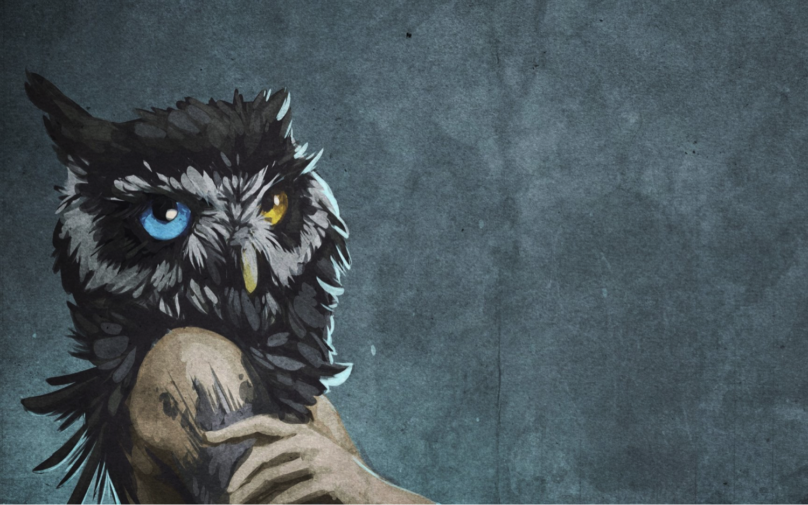

4126 Owlth Place | Owl Sanctuary, OL 12416 | 01.442.1111
Owlth
blog
post

Why can't owls be pets?
Or rather, why shouldn't you want them for pets?
Taking a vacation or going on a business trip is difficult.
You can't just take the owl with you (especially since in the United States permits are usually needed every time you cross state lines.) It takes a trained person to take care of an owl, and if you have a human-imprinted owl, they may be aggressive with anyone else who comes to take care of them. Owls also like routine, so disruption to the normal scheme of things is very stressful for them.
Owls can be very destructive.
They have a natural killing instinct that can be applied to blankets, pillows, clothing, stuffed animals, and just about anything else that can be shredded. Talons are also really bad for woodwork. They bring out the natural grain of the wood really well as they strip off the finish.
Mating season involves a lot of all-night racket.
Remember, owls are active at night, so that's when they'll be hooting and calling during mating season. If you have neighbors nearby, they won't be very happy about the noise. If the owl is imprinted on humans, it will expect the person it perceives to be its mate to hoot with them regularly.
Owls don't like to be petted and cuddled.
Captive owls still retain their natural instincts, and traditional "petting" doesn't fit into the owl scheme of things.
Owls are high maintenance.
They require daily feeding, cleaning, and attention, especially human-imprinted owls. Owls that are capable of flying need to be flown regularly, or housed in very large cages where they can get adequate exercise.
Owls are long-lived.
A Great Horned Owl could live 30 or more years in captivity if things go well. Small species could live 10 years. Taking on the care of an owl is a long-term commitment.
Beaks and talons are sharp.
If an owl doesn't like what you're doing, it's going to let you know. And you might wind up bleeding because of it. It's also easy for an owl to scratch you even if they aren't trying if they step up onto your gloved fist but stand off the side of the glove on your bare arm.
Owls need specialized care.
Most veterinarians don't have the necessary training to properly care for owls, so you'd need to find a vet who's comfortable working with an owl. And you as a caregiver need to know quite a bit about owl health also, including what "normal" poop looks like, which very subtle behaviors might indicate health problems, provide proper perching surfaces, a healthy diet, appropriate housing, and regular talon and beak maintenance. There is a LOT to know, which is why proper training is normally required before permits are issued.
Feathers, pellets, and poop!
Owls molt thousands of feathers every year, and they wind up everywhere. Owls throw up pellets of fur and bones wherever they happen to be at the time. And poop happens. A lot. In addition to "regular" poop (like most birds), owls also empty out the ceca at the end of their intestines about once a day. This discharge is the consistency of chocolate pudding, but smells as bad as the nastiest thing you can imagine. And it stains something awful. Keeping owls involves non-stop cleaning.
FOOD.
You can't just go down to the local grocery store and buy Owl Chow. Owls are strict carnivores and require diets of whole animals for proper health. The Owl Center has chest freezers stocked with pocket gophers, rats, rabbits, and mice. Each day food is thawed and staff remove the stomach, instestines and bladders from the food animals before serving them to the owls. Leftovers from the previous day must be located and removed, as owls like to cache (or hide) leftover food for later. If you're not prepared to thaw and cut up dead animals every night of your life for 10 years or more, you aren't up for having an owl.